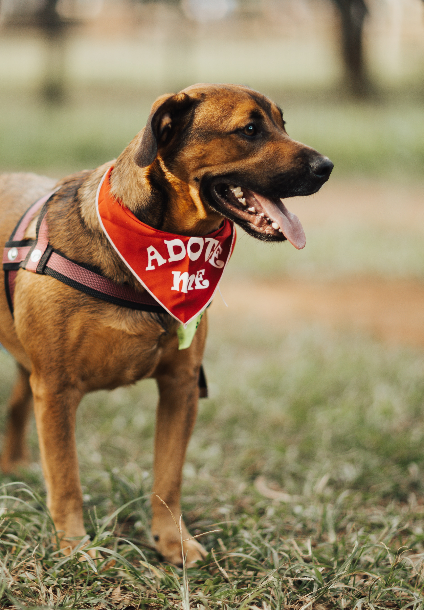
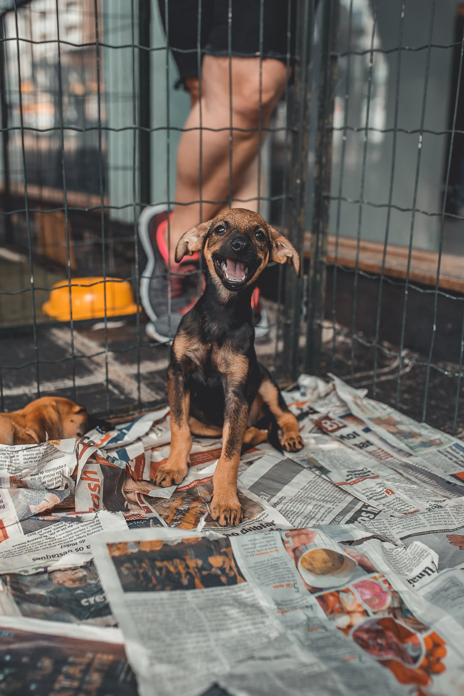

Why PetPals?
Meet a pet
A pet can change your life! Sometimes, all we need is a friend by
our side.
Lend a hand
Many pet shelters are reaching capacity, and require assistance
from the community for love and support!

Saving Lives
One of the most significant benefits of pet adoption is that it
saves the lives of animals that might otherwise be euthanized due
to overcrowded shelters or limited resources. By adopting a pet,
you are giving an animal a second chance at life and providing
them with a loving and caring home.
Variety of Pets
You can find a wide variety of pets available for adoption,
including dogs, cats, rabbits, birds, reptiles, and more. Many
different breeds and mixed-breed animals are also available, so
you can often find a pet that suits your lifestyle and
preferences.
